Sistema v2 aplicado, con tus 21 piezas reales. Aún sin publicar: espera tu GO.
Barra arriba, más aire, cada tarjeta dice qué falta.
Antes
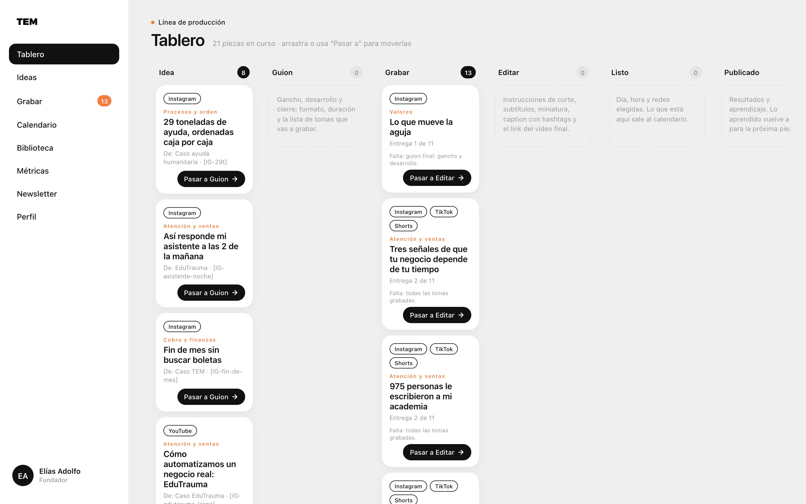
Después
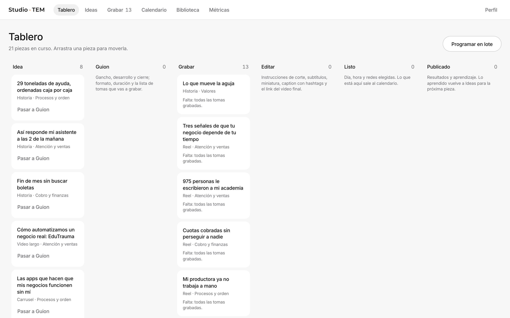
Sin marcos naranjas ni peso 900.
Antes
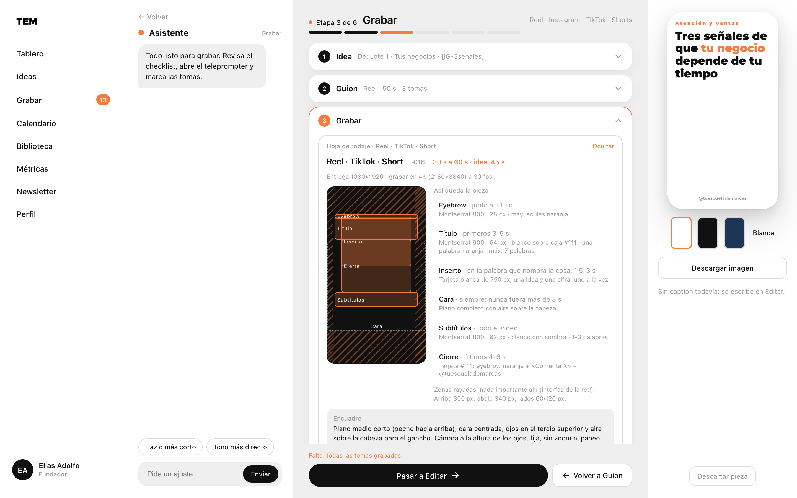
Después
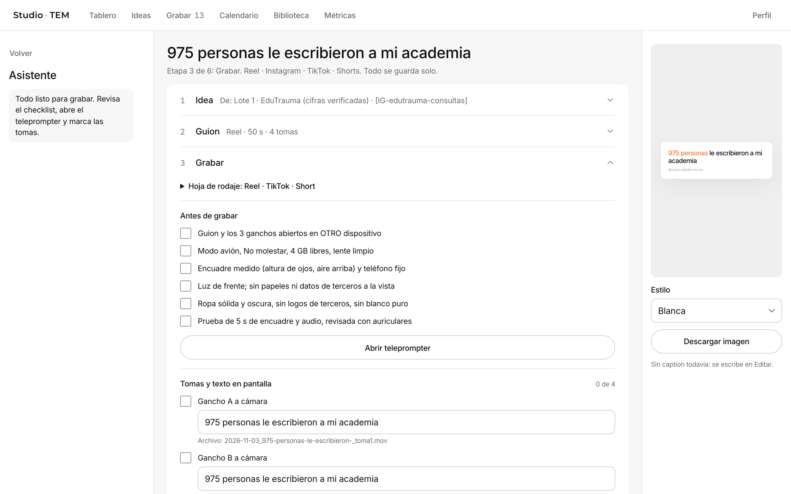
Antes eran datos de ejemplo. Ahora son tus 8 publicaciones medidas.
Antes
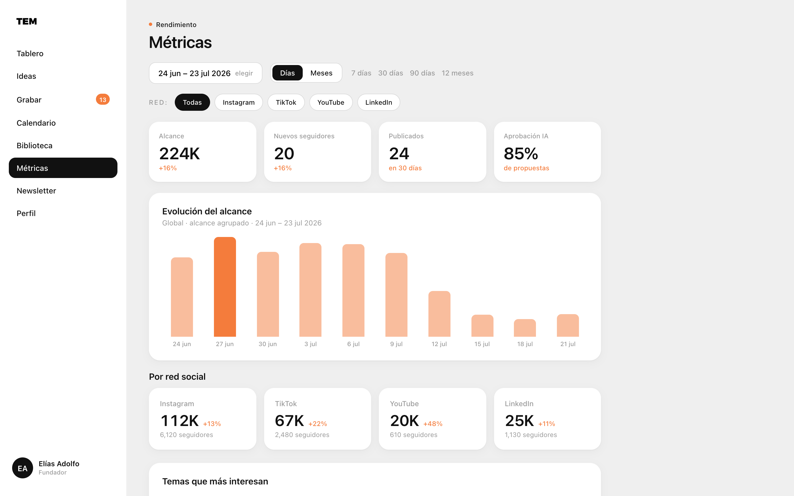
Después
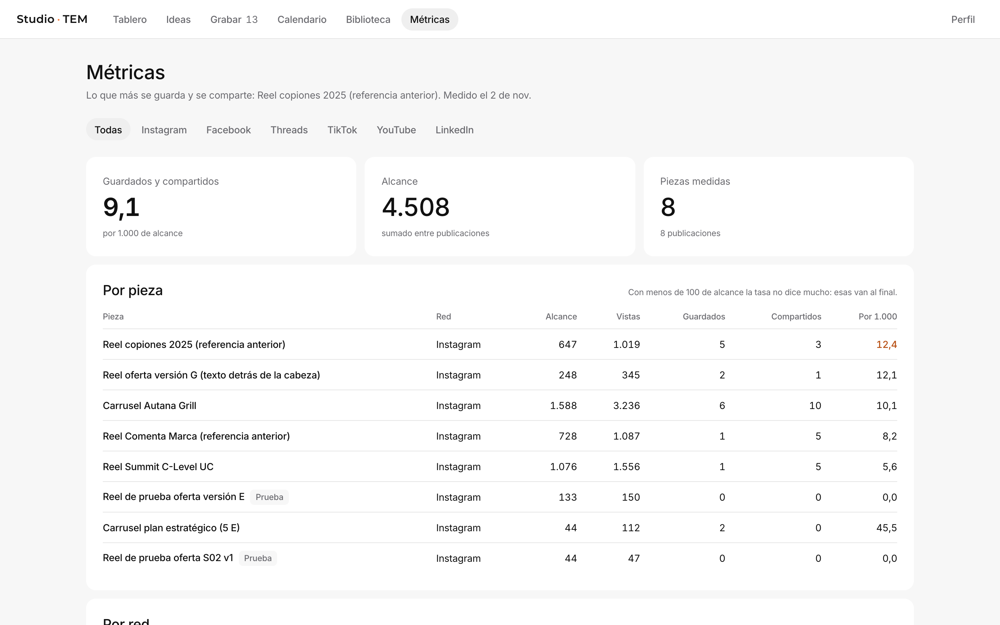
Nuevo: eliges piezas, redes y fechas. Nada sale sin tu confirmación.
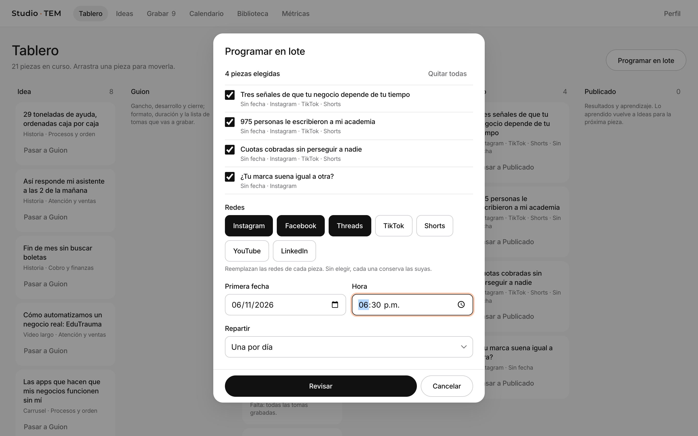
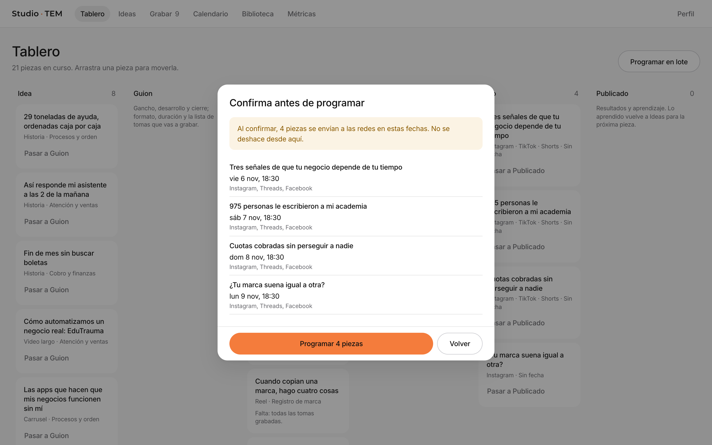
Si una falla, las otras siguen. Aquí, con fallas simuladas de prueba.
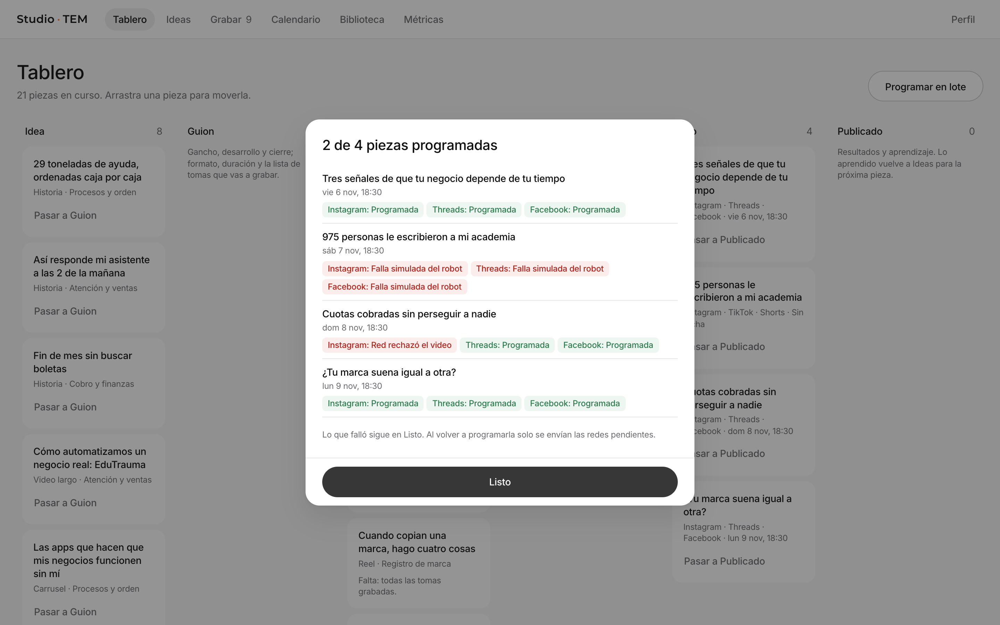
Cada pieza sale solo en su semana.
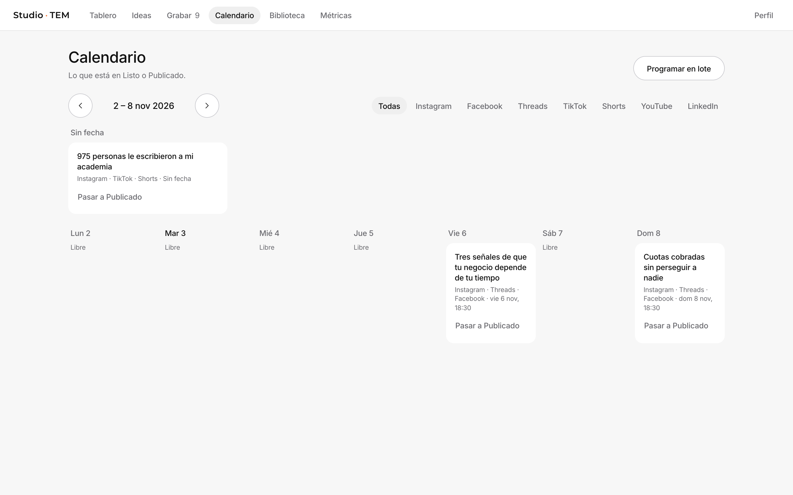
Antes
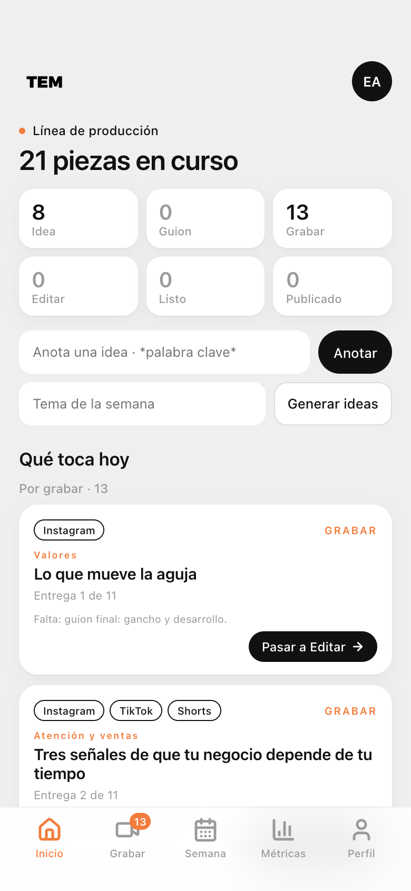
Después
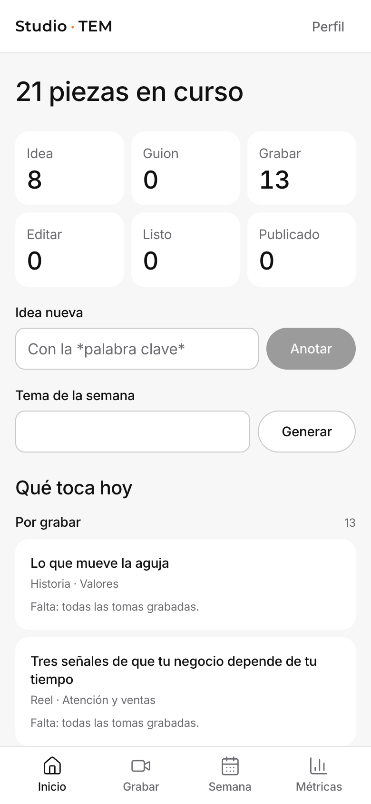
Los dos ganchos se leen seguidos en el teleprompter.
Antes
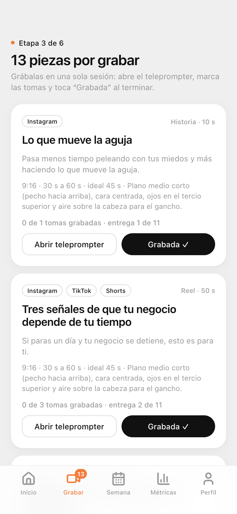
Después
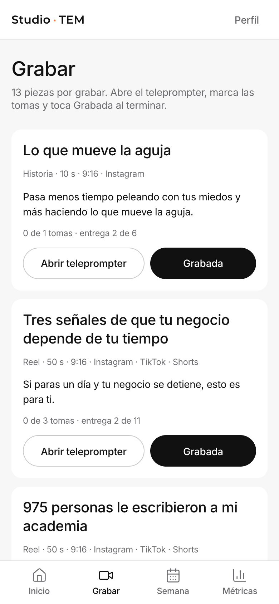
Teleprompter
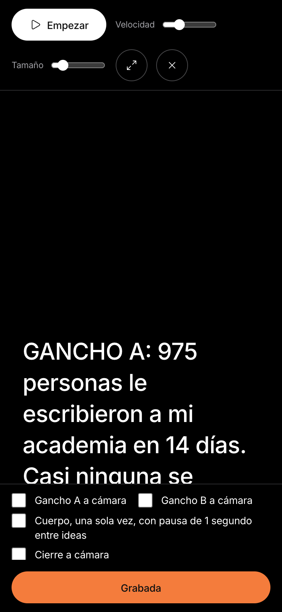
Confirmar lote
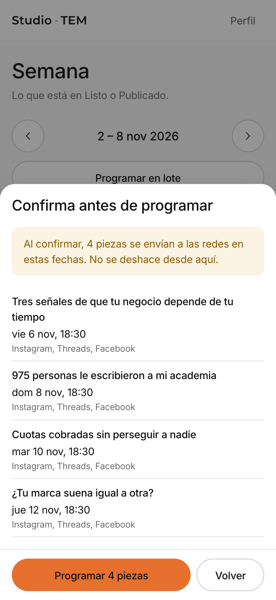